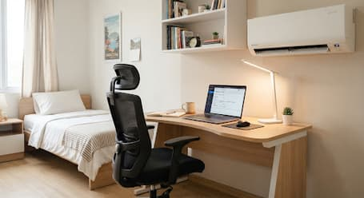

Beranda / Tentang Kami
Tentang KosinAja
Mencari kos dekat kampus tidak perlu ribet.
KosinAja lahir dari pengalaman mahasiswa yang harus keliling gang demi gang, menelepon satu per satu pemilik, dan tetap tidak tahu kamar mana yang masih kosong. Kami menyatukan informasi kos, kamar, dan pemilik dalam satu tempat.
Jelajahi Katalog Kos